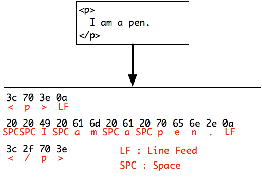

Character Encodings
Upon creating web pages, you may encounter problems related to character encodings, especially when writing pages with languages other than English. In this section, we would discuss the basics and differences of character encodings.
"Characters" in Computers
Before we discuss anything about character encodings, we would first discuss about how computers handle "characters". In the world of computers, every piece of information is expressed with chains of bits. Each bit indicates either a "0" or a "1", and chains of bits are commonly indicated using binary, octal, or hexadecimal numbers.
In the binary number system, each digit represents a single bit. For example, the number "000111" indicates a data of 6 bits. In the octal number system, each digit ranges from "0" to "7", representing a chain of 3 bits. Therefore, the number "650" in the octal number system indicates a chain of 9 bits. Finally, in the hexadicimal number system, each digit ranges from "0" to "9", and "A" to "F". Each digit is able to represent a chain of 4 bits, which also means that the number "F134", for example, indicates a chain of 16 bits. The following chart indicates the range of values a 4-digit number is able to express, in the three numbering systems.
Used Characters |
Minimum Value |
Maximum Value |
|
|---|---|---|---|
Binary |
0 and 1 |
0000 (0) |
1111 (15) |
Octal |
0 to 7 |
0000 (0) |
7777 (4095) |
Hexadecimal |
0 to 9, "A" to "F" |
0000 (0) |
FFFF (65535) |
Handling of Characters
In the previous section, we discussed how computers handle information using chains of binary bits. However, binary bits are only able to express numbers. If that is the case, how would computers handle characters??
Getting right to the answer, computers uses character mapping tables, which indicate codes (in numbers) for each one of the characters. For example, in the ASCII Table, which indicates codes for the alphabets and numbers commonly used in most languages, the following rules apply for mapping (encoding) characters.
- The size of a code for 1 character must be 8 bits.
- The characters listed in this table include numbers from "0" to "9", alphabet letters from "A" to "Z" (both lower-case and upper-case letters), and symbols such as hyphens ("-") and periods (".").
- Spaces and line feeds are also considered as 1 character.
If computers were to handle the following characters, it would be translated into "chains of numbers" using the ASCII Table, as shown below.

As shown above, computers handle characters using numbers. The numbers which correspond to certain characters are called character codes. As there are a lot of different languages throughout the world, there are different methods of character encoding for each individual language. The following table indicates the details of the encoding methods mainly used in Japan for expressing Japanese characters, as well as alphabets.
|
Types of Characters |
Main Usage |
|
|---|---|---|
ASCII |
1-Byte Alphabets, Numbers, Symbols |
The most basic set of character codes. |
Shift JIS |
Alphabets, Numbers, Symbols, Japanese |
Mainly used in previous versions of Windows. |
EUC-JP |
Alphabets, Numbers, Symbols, Japanese |
Mainly used in previous versions of UNIX systems. |
ISO-2022-JP |
Alphabets, Numbers, Symbols, Japanese |
Mainly used for e-mail messages written in Japanese. |
UTF-8 |
Multiple Languages |
Mainly used in the most recent versions of Windows, Mac OS X, and Linux systems, as a standard. |
There are other types of codes which aren't described here, but if there are no special requirements and exceptions, we strongly recommend you use UTF-8 for encoding HTML documents.
Corruption of Characters
When surfing the web, you may have seen pages that have corrupted characters, as shown below.

The cause of these problems are often one of the following reasons.
Mismatch of Character Encoding Methods
In most cases, corruptions are caused by mismatches of character encodings between the original HTML document and the browser setting.
When browsers load HTML documents, it first examines the "meta" tag with the "charset" attribute, within the "head" element. This tag indicates the character encoding method of the entire HTML document. After examining the tag, it then adjusts its settings, so that the entire document could be interpreted correctly.
<meta charset="UTF-8" />
If the browser can't find the corresponding tag, it tries to interpret the document with its default encoding settings. If the encoding methods match, there won't be a problem. However, if the default settings don't match that of the document, it is more or less likely that character corruptions would occur. The occurance of corruptions differ based on the type and the default settings of the browser.
For example, this web page (written in Japanese) would be interpreted correctly under Firefox and Google Chrome. However, it would be corrupted when viewed using Safari, unless the encoding method is manually adjusted from the "Text encoding" option under the "View" menu. You may intentionally cause corruptions under Firefox by selecting different encoding methods in the same way.
Upon coding HTML documents, it is recommended to indicate the character encoding method using the "meta" tag shown above. It is also important to save your code using the correct method of encoding. If you are using Emacs, you can save files using the desired method of encoding by typing "C-x return f", followed by the name of the encoding method. For GUI text editors, there sould be a menu for selecting encoding methods.
Unfound Fonts
Corruptions would also occur when the browser can't find the corresponding font installed on the computer. For example, if you try to view web pages written in Arabic or Korean, with a computer that does not have certain language packs installed, corruptions may occur. The only way to avoid such problems would be to use images with characters, instead of text, or to have everyone install appropriate fonts.
In This Section...
You have learned the basics of character encodings and how computers handle characters. You have also learned how to avoid character corruptions.